Music Analytic’s
I chopped my theme/track into three sections for the purpose of this lab:
Intro
Verse
Chorus
For each track I loaded three panes, a spectogram, a mel frequency cepstral coefficients, and a chromagram.
Intro:
Chromagram
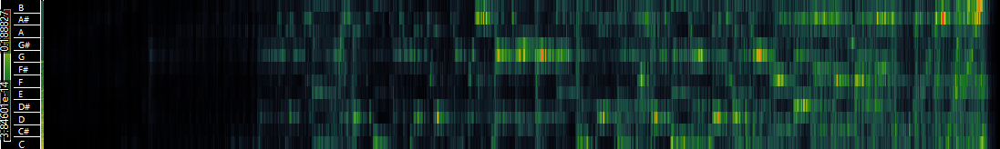
Mel Frequency
Spectogram
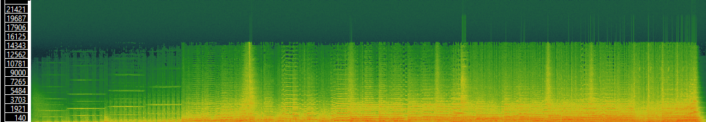
Verse:
Chromagram
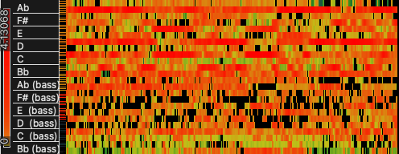
Mel Frequency
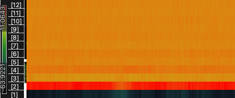
Spectogram
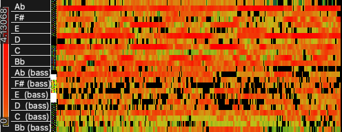
Chorus:
Chromagram
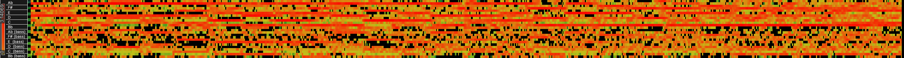
Mel Freq
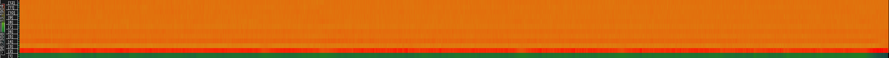
Spectogram
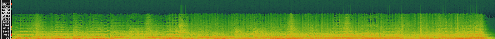
Using the python template from the Week9 moodle, I was able to load the python libraries and my csv files containing my transform features from sonic visualiser. I was then able to inspect the data and generate a histogram for one features and then all features and save it as a PNG file. I will attach a video here showing a successful example of this using the CSV file containing the chromagram features from the intro track I clipped:
This was completed for the CSV files of the Chromagram, Spectogram and MFCCs features in each individual track. A google drive link will detail all the PNG files created containing the different comparable histograms:
A histogram is a chart that plots the distribution of a numeric variable's values as a series of bars. Each bar typically covers a range of numeric values called a bin or class; a bar's height indicates the frequency of data points with a value within the corresponding bin.
I have chosen to compare the chromagram histograms for each invididual track. In this case the chroma PNG file for intro, verse and chorus tracks:
Histogram for Intro / Chroma
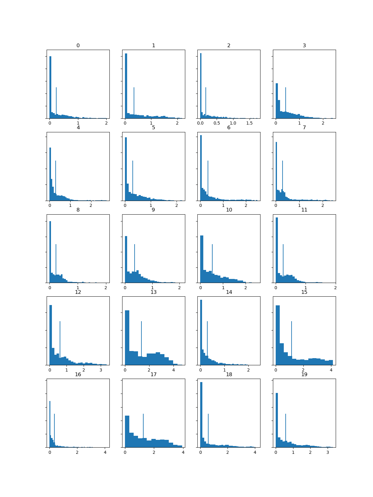
Histogram for Verse / Chroma
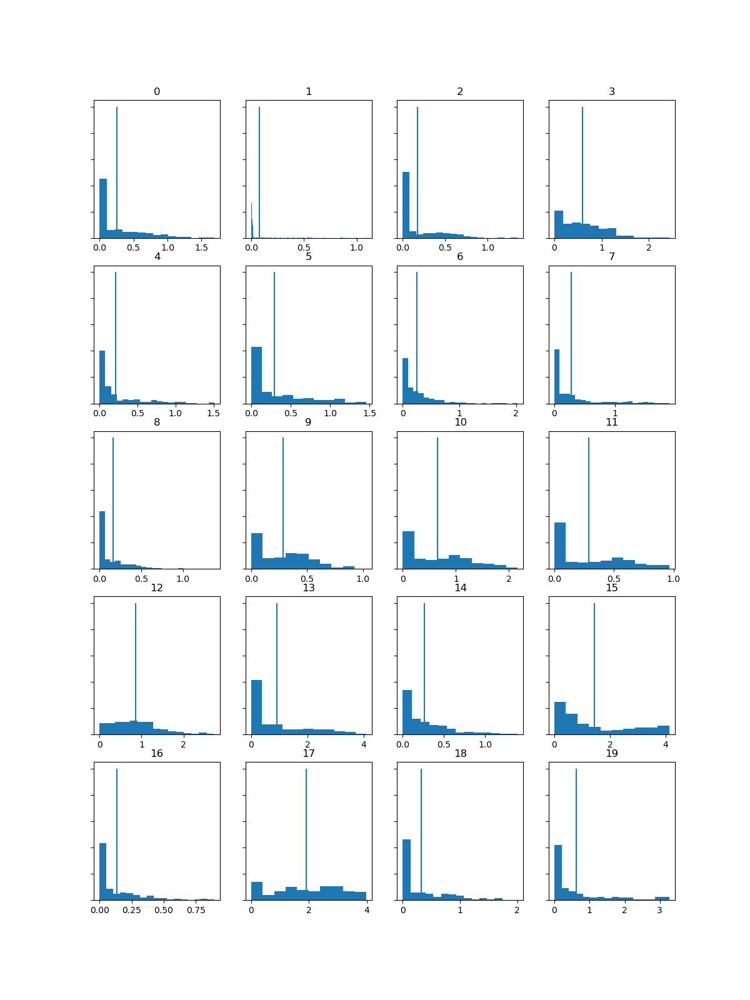
Histogram for Chorus / Chroma
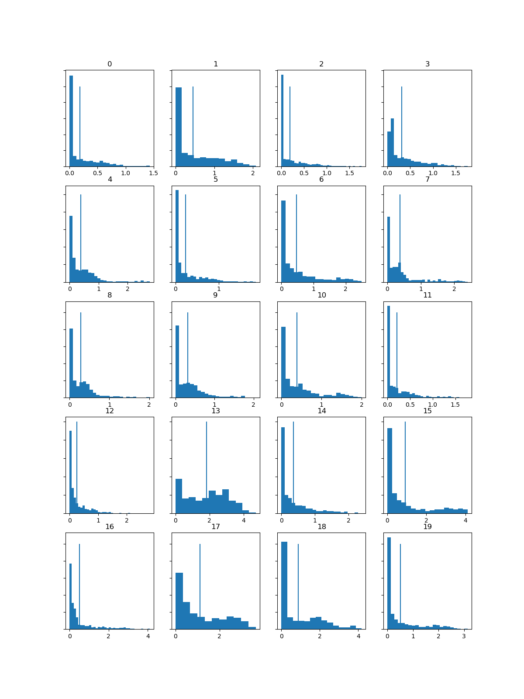
As an example, upon loading the Chorus Chroma CSV file into the python template, upon inspecting the data shape to get the number of rows and columns, it was stated that there were 1019 rows which represent 1019 individual frames covering the whole track. It stated that it had 24 features (columns) for each frame. So in other words we had 24 individual chromagrams for each frame. This means we need to generate 24 histograms to get an overview of the data accross the entire track. The variables here differed for each track. To keep things balanced and simple for an easy comparison, I have generated 20 histograms for the features of each track.
Upon comparing the histograms for the three tracks, there are clear differences. The intro track historgram shows more higher frequencies in comparison to the verse and chorus histograms. The histograms for intro and chorus had some similarity while the histogram for the verse stood out and had the least similariry to the others. It was the outlier. The verse histogram had a less amount of higher frequencies but a larger frequency spread across the dataset. The intro and chorus histograms were similar in spread. Bin 13 on the intro and chorus histograms shared similarity as this was where the most frequency values were present. However for the verse histogram, the largest frequency values present was in bin 15 or 17. The similarity between the intro and chorus tracks was expected after listening because they contained similar and some identical pitch and rhythm segements. Frequency changes between the two tracks were also similar. It was clear that the verse track was the outlier because it had differing pitch and rhythm segments. Furthermore, the verse track had less simultanous instruments taking place in time. Bin 2 on the intro and chorus histograms had the highest peak in frequency. Bin 17 was shared as the lowest frequency peak across all the histograms.
Week10Lab